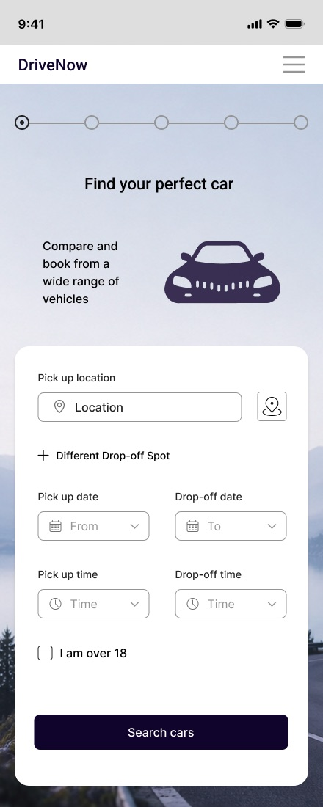

Hey, I'm Anastasiia,
UX/UI designer
Based in London. I design practical, easy-to-use interfaces. I start with research and keep testing until the flow feels obvious.

Skills
Research & testing
Interviews, usability tests and affinity mapping to find the real problem.
Flows & structure
User flows and journey maps that remove friction and unnecessary steps.
UI & components
Clear hierarchy, consistent patterns and development-ready screens.
Prototyping
From paper sketches to interactive Figma prototypes for validation.
Selected work
How I research, design and iterate: a car rental app, a pet care marketplace in Canada and a London rental site.
Now

DriveNow, car rental app
Redesigning a complex booking flow to reduce friction and help users decide faster.
Velo
- Team audit
- Redesign
- Weekly reviews
- Dev handoff
TiriVelo, confident checkout
Auditing and redesigning the booking and payment experience for an early-stage pet care marketplace in Canada. The product is still in development, so this case is told without screens.
Scout

RoomScout, London room rentals
A London room rental concept where every room is checked in person and every price is shown all in. Designed and built as a live responsive site.
How I work
Every project follows the same loop: understand people first, then design, test and refine.
Discover
Audience, competitors and interviews to understand the context.
Define
Affinity mapping and journeys to pinpoint the key problems.
Design
Sketches, wireframes and UI built on clear hierarchy.
Test & iterate
Validate with users and stakeholders, then refine.